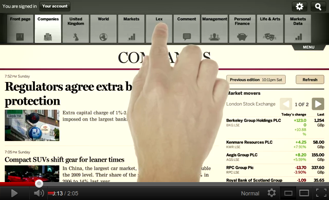

single page applications
Ben Ripkens
March 2012
What is a SPA*?
*single page application
A few examples


SPA to replace mobile (native) apps

Characteristics
- Few to no page reloads
- A fair amount of logic is executed on client-side
- Server-side complexity is reduced